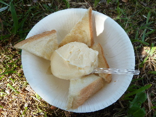
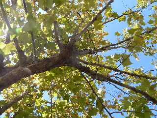
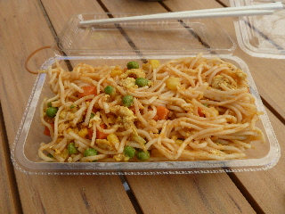

島根大学医学部の文化祭「くえびこ祭」に行きました。
更新日 : 2015/10/18

今日は天気がとっても良かったです。
なのでアイストーストを食べました。
ハチミツもかかっているので、甘くて美味しかったです。

日差しが強かったので、木の下に座ってのんびりいただきました。
レジャー気分になりました。

世界の料理っていうコーナーがあったので、色々買い物して食べました。
こればバングラディッシュ麺だったかな。 カレー風味なナポリタンぽいものでした。美味しかったです。
普段食べれないものが食べれるのっていいですね。お昼にいったので、昼食に丁度良かったです。来年もお昼ご飯を食べに行こうかな。